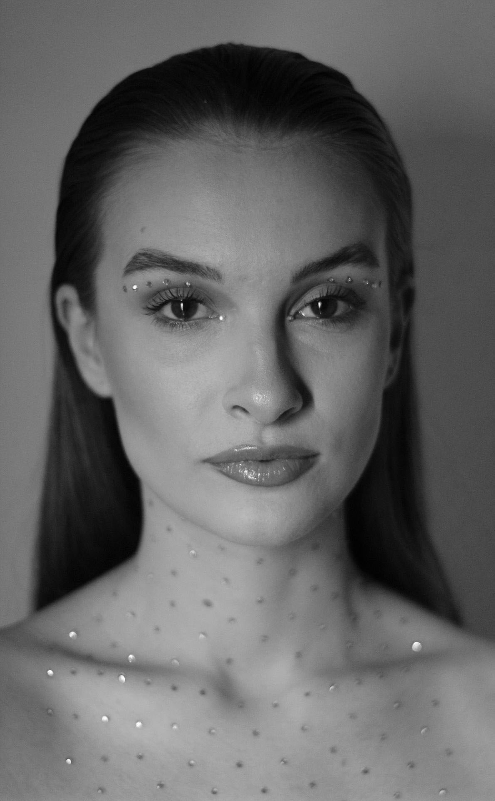
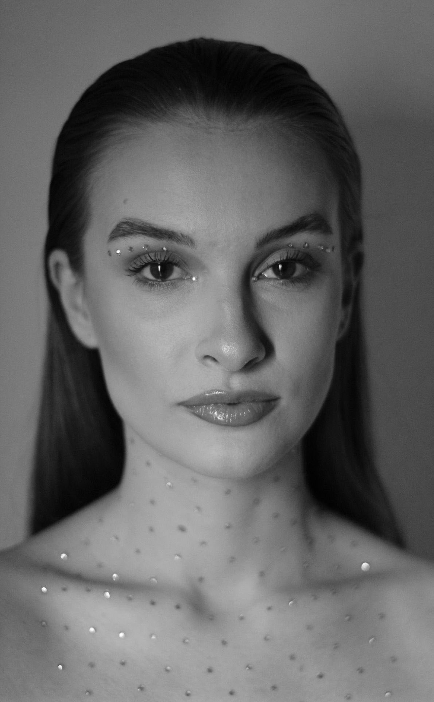

Fotografija je nešto što me oduvijek privlačilo. Obilježiti trenutak, tražiti ljepotu u stvarima koje nas okružuju neke su od stvari zbog kojih je počela moja ljubav prema fotografiji.

 

PABLO
Pablo je moj pas koji ima 3 godine. Cijela obitelj ga obožava. Vrlo je sretan pas koji se voli igrati i skakati.
GLAZBA KOJU SLUŠAM
Što se tiče glazbe koju slušam, vrlo sam jednostavna osoba i lako se prilagodim svakoj vrsti glazbe. Ovo je jedna od pjesama koju slušam ovih dana: